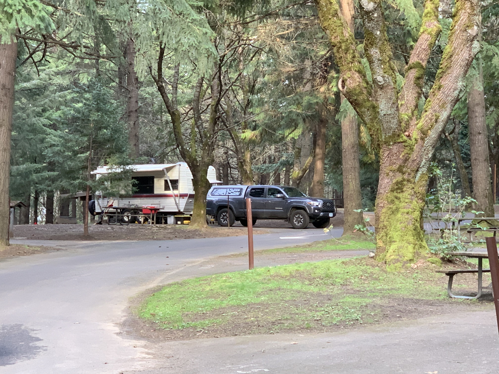

1 of 40 | 1/9/22
This snapshot at L.L. Stub Stewart State Park captures the chaos of transition, our beloved vehicles overstuffed as we left behind our home. They were the vessels of our memories, soon to be exchanged for a ride that promised safe passage on the road that stretched before us.
2 of 40 | 1/15/22
After a whirlwind of packing and preparing, here we are in our new abode: a snug camper that holds all our immediate necessities - and our little family of two humans, two cats, and two dogs. Though we've parted ways with Falcor, who's found a new home on a hobby farm, and cherished Sancho's last days by the coast, their memories remain a comforting presence in our journey. Surrounded by boxes and the essentials, we're making do, learning to live with less, and finding joy in the simplicity of camper living.
3 of 40 | 1/23/22
Here we stand, temporarily stationed at our second campsite, with our loyal dogs by our side and our new truck. It's a short stay before we return to LL Stub State Park for another stint, bridging the gap between my remaining workdays and the start of our grand adventure into the wild.
4 / 40 | 2/5/22
On a sunny Febuary day, we took the dogs for a walk along a river in Oregon's coast range.
5 / 40 | 2/17/22
Nestled in Detroit Lake, Oregon, our camper sits quietly among the towering trees, a temporary home as we venture further inland, steadily distancing from our old life.
6 / 40 | 3/4/22
The Central Oregon Coast will always be a special place where we carry memories of our beloved Sancho.
7 / 40 | 3/23/22
At the storage unit's threshold, we sifted through our past, carefully selecting pieces of our life to take along. Everything else we released, making room for new beginnings.
8 / 40 | 3/23/22
This U-box is more than a container; it's a capsule of necessity, securing the remnants of our home and the vital tools destined for tomorrow's endeavors
9 / 40 | 3/25/22

Parked beside the train tracks in The Gorge, Oregon, our campsite is alive with the sounds of passing trains as we slowly begin our eastward trek.
10 / 40 | 4/4/22
Nestled in the Ochoco Mountains near Maury Mountain, famous for its moss agates, we're truly off-grid for the first time now powered by solar energy.
11 / 40 | 4/11/22
Halfway through a two-week stay in the Ochoco Mountains, a surprise snowfall transformed our rockhounding adventure into a snow camping experience. Surrounded by nature's quiet, our camper offered a cozy haven amidst the snowy landscape, just a stone's throw from the area's abundant rockhounding spots.
12 / 40 | 4/22/22
Beginning our trek to Michigan, we found respite for the night in a desolate roadside pullout in Eastern Washington our first stop in a journey of many, under a vast sky of rolling clouds.
13 / 40 | 4/23/22
Defying the signs and a bit of conventional wisdom, we managed to snugly tuck our camper into an incredible spot right on Rock Creek, just east of Missoula, MT. This serene nook, where the roar of the creek and the rustle of the pines were our only company, was so captivating it merited an extra night's stay.
14 / 40 | 4/24/22
A mile upstream from our campsite, Rock Creek courses through the Montana wilderness. The vibrant flow of water against the rugged landscape offered a breathtaking vista, enhancing the natural beauty that accompanied our journey.
15 / 40 | 4/25/22
Tucked away in the embrace of Eastern Montana's landscape, our campsite by the Yellowstone River offered a quiet solace. It's a hidden gem, marking the last of the clear skies and warm sun before the weather turned.
16 / 40 | 4/26/22
Here along the Yellowstone River, our camper rested among the whispers of the wild Montana expanse. This spot became our serene shelter, a free haven amidst our trek, with nature's grandeur as our backdrop.
17 / 40 | 4/28/22
Nestled in the Western Upper Peninsula of Michigan, we've found a momentary home amidst the towering pines. Here, we pause to rest and gather ourselves, taking in the quiet beauty of a place we're seeing for the first time after a brisk journey through wind, cold, and snow.
18 / 40 | 5/3/22
Recharged after a four-day respite, we made our way to Haymeadow Falls Campground, 25 miles from Escanaba, where the rest of our belongings awaited. This spot, a tranquil prelude to our land search in Michigan, would be our base for two fruitful weeks as we scouted for the perfect plot to call our own.
19 / 40 | 6/12/22
Tucked away in the Hiawatha National Forest, just a few miles north of Rapid River, MI, our unmarked campsite became a familiar retreat, spent two week stays not once, but twice. Here, dinner simmers in the Instant Pot, powered by our trusty gas generator, while the day's sunlight is quietly captured by the solar panel, ensuring our Jackery battery pack stays full, ready for whatever comes next.
20 / 40 | 7/12/22
Standing at the edge of a new beginning, here I am beside a boundary marker, just days before making the 20 acres in Cornell, MI our own. This land, soon to be threaded with our dreams and toil, waits quietly under the open sky—a canvas for our future.
21 / 40 | 7/15/22
After 190 days of wandering, we've settled on our own slice of Michigan wilderness. No buildings, no fences—just 20 acres of freedom. From January 7th to July 15th, we were without a home; now, we stand on the land that's truly ours.
22 / 40 | 7/16/22
Captured from the skies, this inaugural drone shot overlooks the 20 acres we now call home. Without an address to call our own, we ventured to Green Bay to retrieve the drone from an Amazon locker. This image marks the beginning of our journey, chronicling the transformation of this land into a regenerative homestead.
23 / 40 | 7/20/22
This view marks the spot of our first building site on our new land. Selected for its higher elevation and closeness to the rustic road, it's the starting point from which we'll shape our homestead, nestled within the verdant embrace of Michigan's woods.
24 / 40 | 8/15/22
From above, the transformation is evident—the first chapter of land clearing unfolds on our Michigan homestead. To the far left, 'Summer Camp' stands, our camper nestled there while we work. At the picture's bottom left, the building materials hint at the structure to come.
25 / 40 | 8/21/22
The landscape bears the marks of change: more trees felled, destined to become firewood for warming our future home. The second round of clearing is complete, and the pile of gravel in view signals the next phase of our project.
26 / 40 | 8/24/22

Our future home's outline is etched into the Michigan wilderness, courtesy of our rented excavator. The gravel pile looms; it's the foundation-to-be, a testament to our progress. This land, once wild, now shapes into a dream we're molding with our own hands—a promise of home amidst the trees.
27 / 40 | 8/28/22
The gravel now spreads across the clearing, sketching the footprint of our future. This pad, once just an idea, takes shape in the heart of the forest, a sign of the homestead that we will create here.
28 / 40 | 8/30/22
Our camper rests on the gravel pad, a solid foundation amidst the encroaching mud of the season's rain, a testament to the resilience needed as we forge our homestead in the Michigan woods.
29 / 40 | 8/30/22
Viewed from above, our gravel pad lays out a canvas of potential, the heart from where our Michigan homestead will rise amidst the embracing woods.
30 / 40 | 10/2/22
Early October brings a tapestry of fall colors to our growing homestead, where our first small yellow building stands proud and 13 cords of firewood await, promising warmth for the season ahead.
31 / 40 | 11/17/22
Fresh snow blankets our homestead, a silent witness to the season's shift. With the camper and woodpile secured beneath tarps, this frozen moment marks a pause in our homestead adventure as we adapt to new jobs and an apartment in town.
32 / 40 | 2/12/23
Our Michigan homestead evolves with two Amish-crafted buildings set against the snowy backdrop. The left, a garage-to-be for tools and gear; the right, a future tiny cabin, cozy and waiting for our touch. Both stand mobile on skids, ready to move deeper into our 20-acre wilderness when we're ready to settle amidst the forest's opportunities.
33 / 40 | 6/19/23
As June unfurls its greenery, our camp thrives with the addition of another truck and a spacious screened tent, our seasonal shield from the elements and the ever-present woodland buzz.
34 / 40 | 7/15/23
A new tractor stands amidst our vehicles and structures, a harbinger of development as we set sights on enlarging our pad after conquering the road's muddy challenge.
35 / 40 | 9/8/23
The onset of fall casts a kaleidoscope of changing leaves around our homestead, signaling a vibrant September in the wilderness.
36 / 40 | 10/4/23
The vibrant fall colors signal not just the change of seasons, but our steadfast commitment to winterize our cabin, ensuring a warm haven as the camper yields to the frosty months ahead.
37 / 40 | 10/28/23
End of October's chill strips the trees bare, as our cabin, warm with wood-stove glow, becomes our full-time shelter, with the camper now a satellite for life's simpler needs.
38 / 40 | 11/3/23
As the cold sets in, we've carved out a nook for the camper and tractor accessories, all set against a backdrop of dormant trees awaiting winter's blanket.
39 / 40 | 12/4/23
Amidst the first whispers of winter, we’ve carved out a new niche for our tractor and camper, poised to nestle the camper into its cozy nook for the season.
40 / 40 | 1/7/24

Blanketed gently by winter's touch, our homestead awaits its next season of slumber. Here, where our dreams took root amidst the wilds of Michigan, we pause to reflect on the two-year journey that's brought us to this view, our hearts brimming with gratitude as we chase a our next dream, seeking to propagate a fresh homestead from the vast landscape.